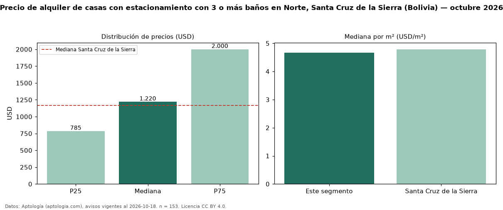

Precio de alquiler de casas con estacionamiento con 3 o más baños en Norte, Santa Cruz de la Sierra (Bolivia) — octubre 2026
En Norte, Santa Cruz de la Sierra (Bolivia), la mediana de canon mensual de casas con estacionamiento con 3 o más baños es USD 1.220, según 153 avisos vigentes. Frente a la mediana de las casas con estacionamiento en alquiler de Norte (USD 915, n = 220), queda 33 % por encima; este segmento reúne el 70 % de esos avisos. Por metro cuadrado, la mediana es USD 4,67/m² al mes (n = 143), 4 % por encima de las casas con estacionamiento en alquiler de Norte (USD 4,49/m²). La mitad central de los avisos va de USD 785 a USD 2.000 (razón 2,5), una dispersión alta. El área mediana anunciada es 250 m². El segmento con más oferta es el de 3 o más habitaciones (152 avisos, mediana USD 1.221). La mediana de todas las casas en alquiler de Santa Cruz de la Sierra es USD 1.166 (+5 % de diferencia). Datos: Aptología (aptologia.com), CC BY 4.0 — https://www.aptologia.com/bo. Archivos: PDF, CSV con las cifras y gráfica PNG.

| Avisos únicos | 153 |
|---|---|
| Percentil 25 | COP 785 |
| Mediana | COP 1.220 |
| Percentil 75 | COP 2.000 |
| Mediana por m² | COP 4 |
Fuente: avisos vigentes de portales inmobiliarios recopilados por Aptología, deduplicados (mínimo 30 avisos únicos por celda). Precios pedidos, no cerrados. Fecha: 2026-10-18.